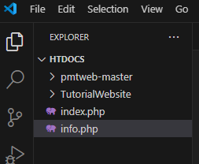
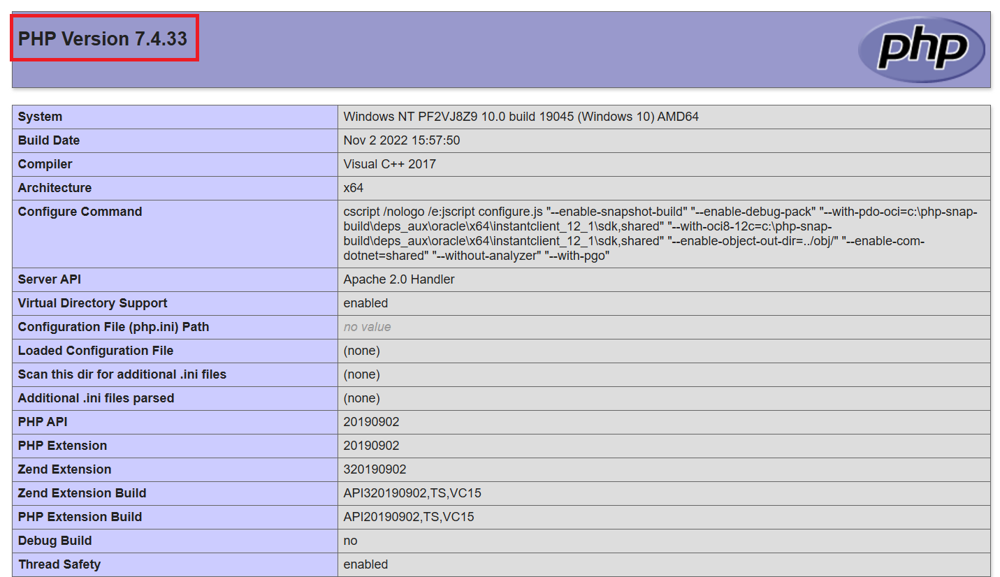
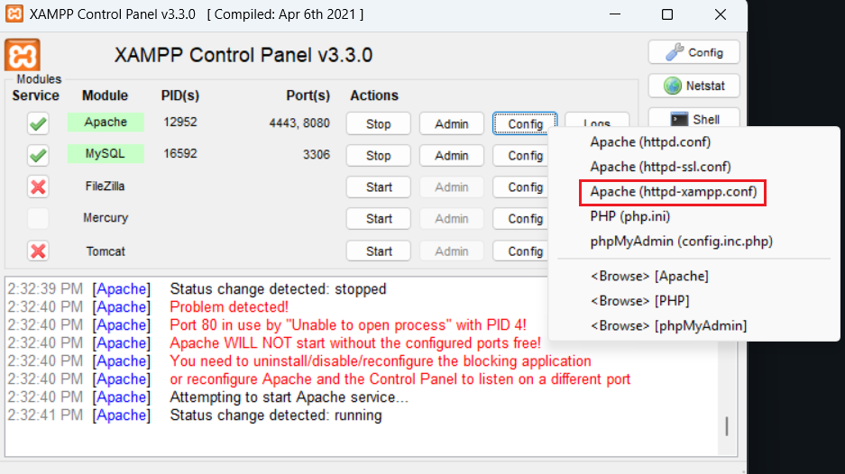
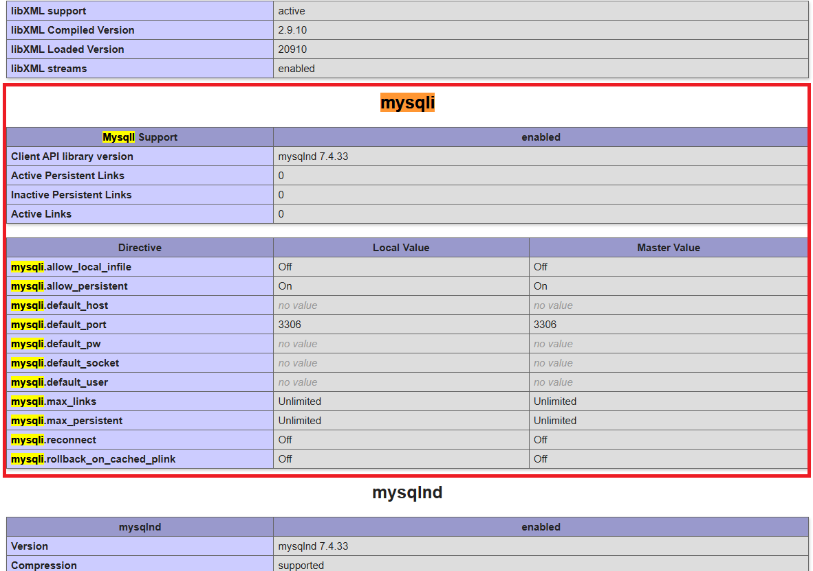
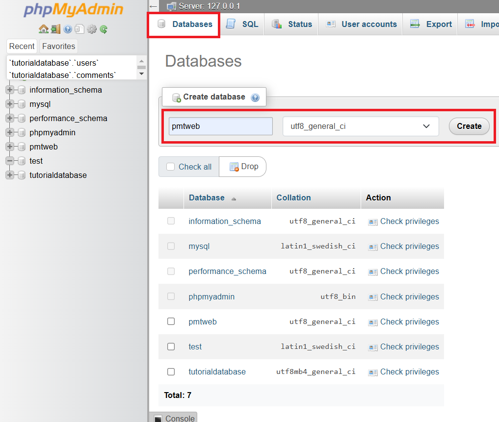
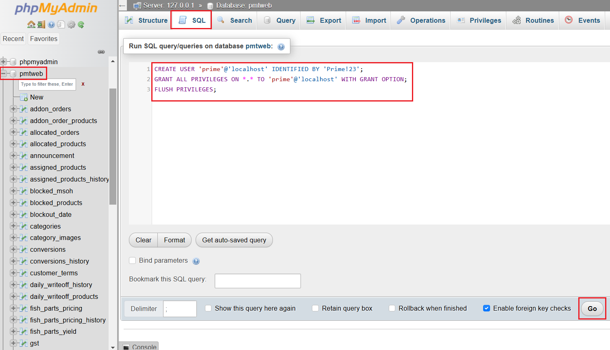

Setting up local server
-
To set up Prime's
pmtwebon your device's localhost, you'll have to make sure your PHP version inxamppis the same (for consistency) aspmtweb. Prime'spmtwebusesPHP 7.4.33. -
To check your php version, start up
mysqlandApacheinxampp. Open up VS code and open thehtdocsfolder inxampp. Create a file insidehtdocscalledinfo.phpand type:<?php phpinfo();
-
Now go to your web browser and type in the following. Do note that the url might differ based on your
folder structureand localhostport number(it's 80 by default).// Link differs based on port number & filepath! localhost/info.php -
You should see a page shown below. You can view your php version at the top.

-
If the version is
PHP Version 7.4.33, you can skip tillstep 11. -
Otherwise, go to this
phpdownload site and download thephp-7.4.33-Win32-vc15-x64.zipfile. -
Unzip the file and rename it to
php. Please check that you have a file named something likephp7apache2_4.dllin the folder. If you don't, go back to the site and download thephp-7.4.33-nts-Win32-vc15-x64.zip(non-thread-safe version) instead. -
Make sure to rename the old php folder in
xamppto something else likeold_php. After which, move the newly downloaded php folder intoxampp. -
Opening up the folder, you should see 2 config files in the
phpfolder:php.ini-productionandphp.ini-development. Since we're usingxampp, we should be usingphp.ini-development. Rename it tophp.ini(Yup, you're changing the file type). -
Open up
xampp control paneland onApacherow, click onconfig > Apache (httpd:xampp.conf).
- Find the following:
LoadFile "/xampp/php/php8ts.dll" LoadModule php_module "/xampp/php/php8apache2_4.dll"- Change
php8ts.dlltophp7ts.dll - Change
php_moduletophp7_module - Change
php8apache2_4.dlltophp7apache2_4.dll
-
You'll need
mysqliextension inphpenabled to connect topmtweb. To enable this, onApacherow, click onconfig > PHP (php.ini).- Search for the line:
extension=mysqli
- Make sure that this line is
uncommented. If you see a;at the front of this line, remove it to uncomment.
- Search for the line:
-
Now go back to
info.php. If you see amysqlisection when you search for it, you're good to go.// Link differs based on port number & filepath! localhost/info.php
-
If you don't, it's most likely the issue with the filepath to the
extfolder in php. To fix this, in thephp.inifile, find this section:; Directory in which the loadable extensions (modules) reside. ; http://php.net/extension-dir ;extension_dir = "./" ; On windows: ;extension_dir = "ext"- Type in the filepath to the
xampp>php>extfolder anduncommentit. It should look like this:
; Directory in which the loadable extensions (modules) reside. ; http://php.net/extension-dir ;extension_dir = "./" ; On windows: extension_dir = "C:\xampp\php\ext" - Type in the filepath to the
-
Check
info.phpagain to confirm the mysqli section is there. -
Once this is done, make sure you have access to the
pmtwebrepository (if you don't, ask your supervisor). Git clone the project into thehtdocsfolder inxampp. -
Now, you'll have to create the database for
pmtweb. Go tophpMyAdminand create a new database as shown below. Make sure the database usesutf8_general_ci!// Link differs based on port number & filepath! localhost/phpMyAdmin
-
Click on the newly created
pmtwebdatabase and go to theimporttab above. Download this zip file and import it. Use default settings for the other options and clickImportat the bottom. After a while, the database should be ready to go.
-
Lastly, you'll need to add a user with ALL PRIVILEGES. To do this, select the
pmtwebdatabase > SQL tab and paste this inside:CREATE USER 'prime'@'localhost' IDENTIFIED BY 'Prime!23'; GRANT ALL PRIVILEGES ON *.* TO 'prime'@'localhost' WITH GRANT OPTION; FLUSH PRIVILEGES;- Click on
Goto exceute the code.

- Click on
-
Once the user is created, type the url shown below to access
pmtwebon the web!// Link differs based on port number & filepath! localhost/pmtweb/index.php